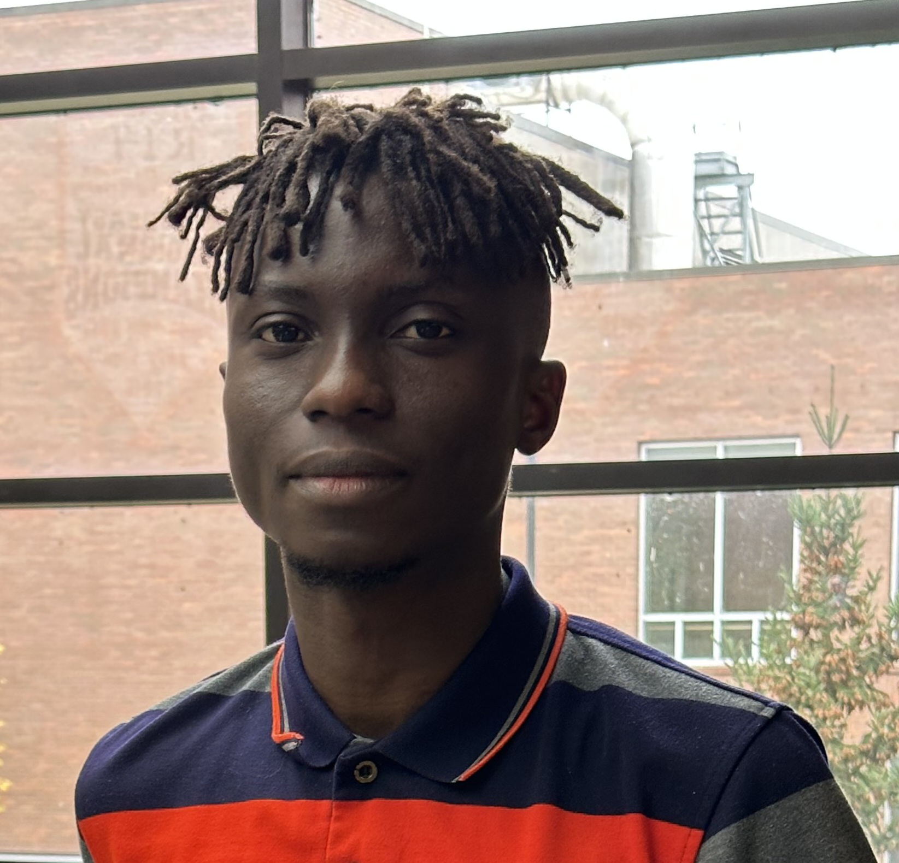

Isaac Olatunji
Graduate Student
Rochester Institute of Technology
✉️
About
I recently received a Master in Bioinformatics degree from RIT (Rochester Institute of Technology), and
I am interested in the applications of AI in the biomedical field. Currently, I work as a Research Assistant
in Hudson lab at RIT. Before now, I applied complex deep learning models like LLM, and GNN in
proteomics research at Cui Lab. In my master thesis, I researched the use of multimodal data (genomic, histopathology images, and clinical data)
for prediction of distant metastasis in carcinoma patients, and machine learning for identification of biomarkers
of cancer metastasis. My knowledge, skills and experience extends through computational skills, molecular biology,
and clinical patient management. I have a background in clinical dentistry, and I practiced for about 4 years prior
to enrolling in the Bioinformatics program.
Research interests
-
Precision medicine
-
Drug discovery
-
Image guided therapy
🎓 Education
- M.S. Bioinformatics, 2023
Rochester Institute of Technology, USA
- Bachelor of Dental Surgery, 2016
University of Lagos, Lagos, Nigeria
📰 News
[Dec 2023] Received completion certificate for finishing Harvard University's Introduction to Computer Science
(CS50) Course.
[Nov 2023] Succesfully defended my master thesis at RIT on multimodal AI for prediction of distant
metastasis in carcinoma patients.
[Oct 2023] Presented a publication on the use of multimodal data for prediction of distant metastasis
in carcinoma patients as an alumnus at Google CSRMP.
📚 Publications and projects
-
Olatunji I and Cui F (2023) Multimodal AI for prediction of distant metastasis in carcinoma patients. Front.
Bioinform. 3:1131021. doi: 10.3389/fbinf.2023.1131021
-
Isaac Olatunji, Feng Cui. Machine Learning Predicts Genes Associated with Cancer Metastasis. Poster
Presentation. AI@RIT Summit. 2022.
-
Isaac Olatunji. Potential application of tumor suppressor microRNAs for targeted therapy in head and neck
cancer: A mini-review. Oral Oncology, Volume 87, 2018, Pages 165-169, ISSN 1368-8375.
https://doi.org/10.1016/j.oraloncology.2018.10.038
-
Prediction of Distant Metastasis from Histopathology Images With Gene Expression as Intermediate.
-
Breast Cancer Nuclei Segmentation on Histopathology Images:
A Convolutional Neural Network based independent project where U-net architecture was coded from
scratch using Tensorflow, and other python libraries. Model was trained with histopathology images
to identify nuclei present in the images.
-
Assessment of ligand protein binding in statins-HMG Co-A reductase complex
Molecular docking of various statin class ligands (ex. simvastatin, pravastatin, etc) to the HMG Co-A reductase protein
using AutoDock Vina in the PyRx software in order to assess their binding affinities. Visualization and analysis of the
various statin-HMG Co-A complex interactions based on features like hydrophobicity, and B factor in the UCSF Chimera
software
-
Differential gene expression analysis in sulphoraphane treated versus vehicle treated obese rats.
Aim was to investigate if any of the Differentially Expressed Genes (DEGs) are related to the leptin receptor or Nuclear
Factor Erythroid 2 Related Factor (NRF2) pathways. Data acquisition from SRA, Quality Control, Alignment, Count
Matrices, Differential Gene Expression Analyis, Visualization, DEGs interpretation.
-
Machine Learning Predicts Cancer Recurrence and Metastasis in Head and Neck Cancer:
A project in R that assessed ability of three types of machine learning algorithm (Naïve Bayes,
SVM- with linear, polynomial, radial basis kernel functions, and Random Forest) to accurately predict
cancer recurrence and metastasis from patients clinical data downloaded from TCGA.
-
Molecular Modelling and Proteomics Course Individual Projects
-
Python implementation of Chou Fasman algorithm for protein secondary structure prediction.
-
Sequence specific retention calculator for calculation of retention time in reverse phase chromatography.
-
Python scripts within Chimera software for download and manipulation of PDB data.
-
Diagnose Your Toothache
A novel algorithm to diagnose pain of dental origin from information about patient’s symptoms, and medical history.
(Python, MySQL)